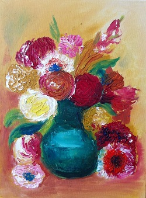
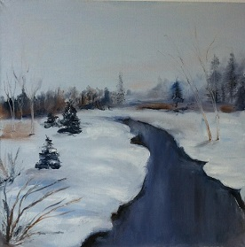
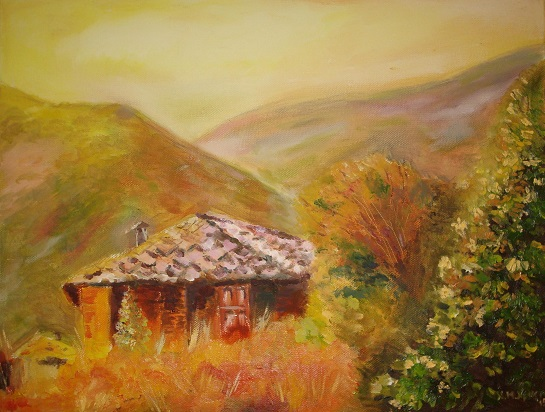
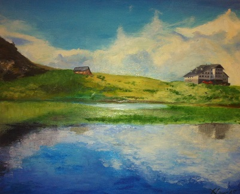
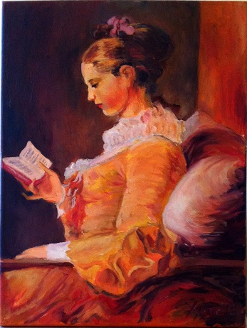
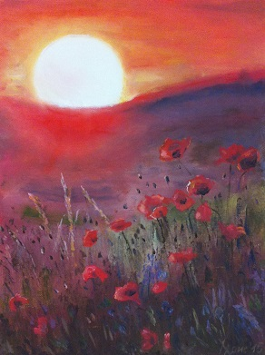
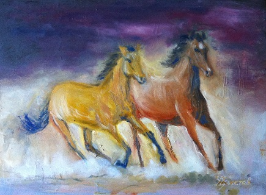
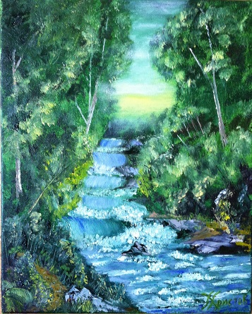
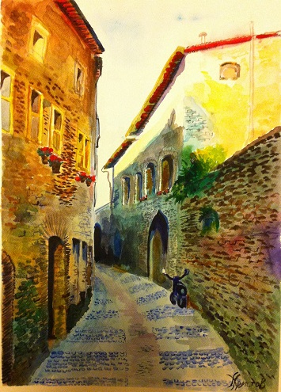
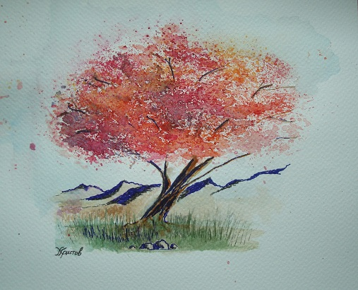

Creative
Painting as a way of looking
This page gathers my complete selection of thirteen works—ten oils and three watercolors—kept at their natural proportions.
Ten works
Oil paintings








Three works
Watercolors

